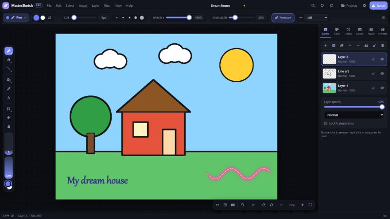
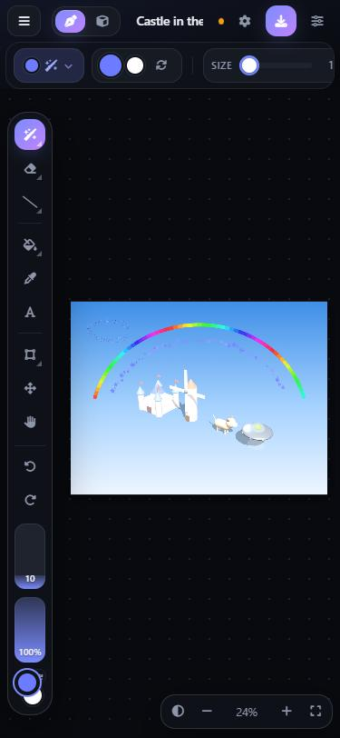
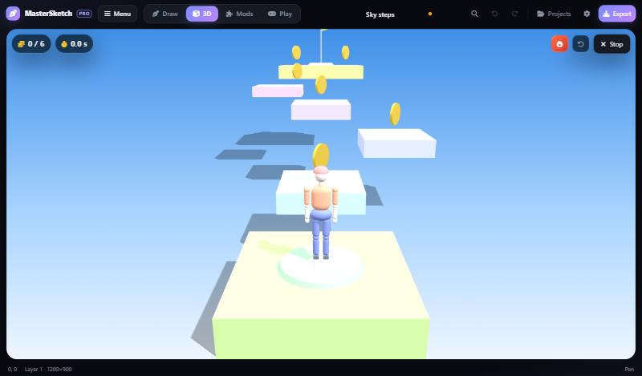
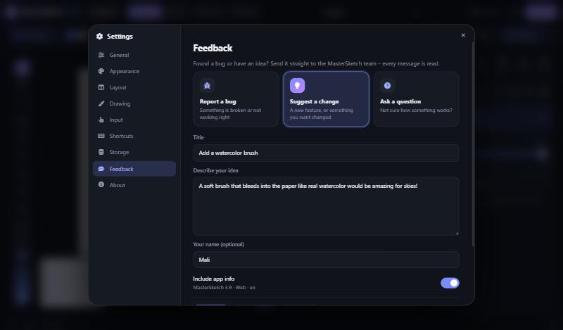
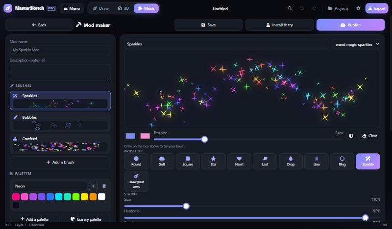
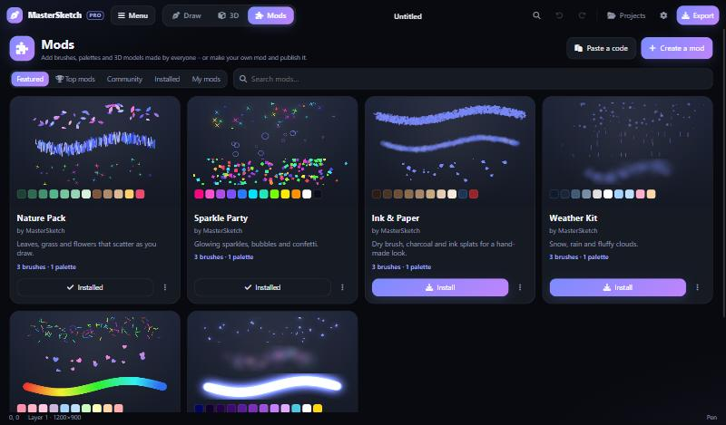
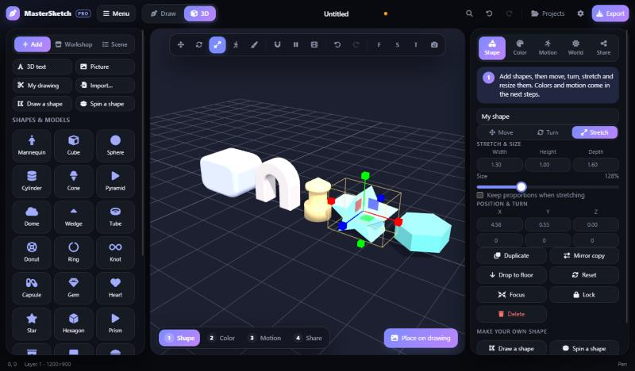
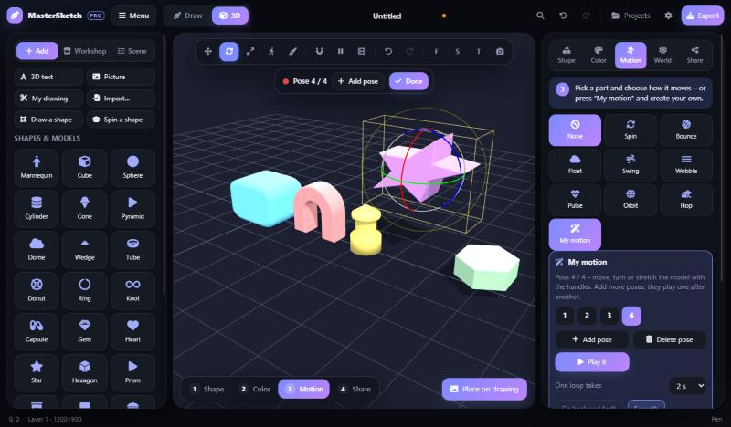
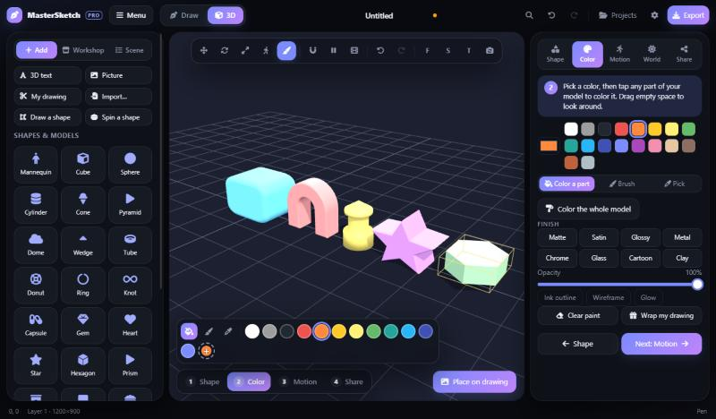

MasterSketch Studio is a free creative studio for every device: layers, 32 drawing tools, animation, photo-to-line-art and a full 3D Studio where you build models, make them move and share them with everyone.MasterSketch Studio คือสตูดิโอสร้างสรรค์ฟรีสำหรับทุกอุปกรณ์ มีเลเยอร์ เครื่องมือวาด 32 แบบ แอนิเมชัน เปลี่ยนรูปถ่ายเป็นลายเส้น และสตูดิโอ 3D เต็มรูปแบบที่สร้างโมเดล ทำให้ขยับได้ และแชร์ให้ทุกคน
Free · no account · works offlineฟรี · ไม่ต้องสมัคร · ใช้ออฟไลน์ได้


Paintings, 3D models, mods and bug reports now go straight from the app to the MasterSketch team. Nobody needs an account, and the team checks uploads before everyone sees them.ภาพวาด โมเดล 3D ม็อด และการแจ้งบั๊ก ส่งจากแอปถึงทีม MasterSketch ได้โดยตรง ไม่มีใครต้องมีบัญชี และทีมจะตรวจสิ่งที่อัปโหลดก่อนให้ทุกคนเห็น
No sign-up and no extra website. Links, e-mails and phone numbers are removed, bad words are blocked, and anyone can report something that is not OK.ไม่ต้องสมัครและไม่ต้องไปเว็บอื่น ลิงก์ อีเมล และเบอร์โทรจะถูกลบ คำหยาบถูกบล็อก และทุกคนรายงานสิ่งที่ไม่เหมาะสมได้
Paste a YouTube link in Settings ▸ Boom Box and listen while you draw. It keeps playing in a little player.วางลิงก์ YouTube ใน ตั้งค่า ▸ บูมบ็อกซ์ แล้วฟังเพลงไปพร้อมวาดรูป เพลงจะเล่นต่อในเครื่องเล่นเล็ก ๆ
Reports that say the same thing are put together, so the most reported problems get fixed first – and you can read the team's answer in the app.รายงานที่พูดเรื่องเดียวกันจะถูกรวมกัน ปัญหาที่ถูกแจ้งมากที่สุดจะได้แก้ก่อน และอ่านคำตอบจากทีมได้ในแอป
Share what you paint with everyone. The Gallery tab shows paintings from the whole community – the team rates the best ones and picks a Staff pick to show at the top.แชร์สิ่งที่คุณวาดให้ทุกคนเห็น แท็บแกลเลอรีแสดงภาพวาดจากทั้งชุมชน ทีมจะให้คะแนนภาพที่ดีที่สุดและเลือกภาพเด่นไว้ด้านบน
Press "Share my painting", give it a title, and post it to the Gallery in a few taps.กด "แชร์ภาพของฉัน" ตั้งชื่อ แล้วโพสต์ลงแกลเลอรีได้ในไม่กี่แตะ
Open the GalleryเปิดแกลเลอรีTap the heart on any painting. The most liked and best rated paintings climb to the top.แตะหัวใจบนภาพไหนก็ได้ ภาพที่ถูกใจมากที่สุดและได้คะแนนดีที่สุดจะขึ้นไปอยู่บนสุด
"Trace over it" puts a painting on your canvas as a faded, locked layer with a fresh layer on top – perfect for practice."ลอกลายตาม" จะใส่ภาพลงผืนผ้าใบเป็นเลเยอร์จางที่ล็อกไว้ พร้อมเลเยอร์ใหม่ด้านบน เหมาะกับการฝึก
Turn your 3D scene into a game: add a Start, coins, springs, lava, spikes and a Goal flag, then walk, run and double-jump through it. Or try three ready-made levels and collect badges.เปลี่ยนฉาก 3D ของคุณให้เป็นเกม: เพิ่มจุดเริ่ม เหรียญ สปริง ลาวา หนาม และธงเส้นชัย แล้วเดิน วิ่ง และกระโดดสองชั้นไปในนั้น หรือลองด่านสำเร็จรูป 3 ด่านและสะสมเหรียญตรา
Press the gamepad button and your character drops onto the Start pad. Moving platforms carry you, springs bounce you up, checkpoints save your progress and the floor can be lava. Beat your best time for 3 stars.กดปุ่มจอยเกมแล้วตัวละครจะลงมาที่จุดเริ่ม แท่นที่เคลื่อนที่จะพาคุณไป สปริงดีดคุณขึ้น จุดเซฟเก็บความคืบหน้า และพื้นอาจเป็นลาวา ทำเวลาให้ดีที่สุดเพื่อรับ 3 ดาว
Play nowเล่นเลย
Settings ▸ Feedback sends your bug report, idea or question straight to the MasterSketch team. Follow the replies and see what's planned next.การตั้งค่า ▸ ความคิดเห็น ส่งรายงานบั๊ก ไอเดีย หรือคำถามของคุณถึงทีม MasterSketch โดยตรง ติดตามคำตอบและดูว่าจะมีอะไรต่อไป

Every mod and model shared with the community is reviewed and rated. The best ones and Staff picks rise to the top of the leaderboards.ทุกม็อดและโมเดลที่แชร์กับชุมชนจะถูกตรวจและให้คะแนน ผลงานที่ดีที่สุดและผลงานที่ทีมเลือกจะขึ้นไปอยู่บนสุดของกระดานอันดับ
A new Mods tab lets anyone add brushes, palettes and 3D models to MasterSketch – without changing the app. Design a brush, try it, publish it, and see it climb the Top mods board.แท็บม็อดใหม่ให้ทุกคนเพิ่มแปรง จานสี และโมเดล 3D ให้ MasterSketch ได้โดยไม่ต้องแก้ตัวแอป ออกแบบแปรง ลองใช้ เผยแพร่ แล้วดูม็อดของคุณไต่อันดับยอดนิยม
Pick one of 10 tips or draw your own, then set size, spacing, scatter, rotation, jitter, glow and rainbow colors. Try it on the spot, add palettes and 3D models, and publish.เลือกหัวแปรง 10 แบบหรือวาดเอง แล้วตั้งขนาด ระยะห่าง การกระจาย การหมุน ความสุ่ม การเรืองแสง และสีรุ้ง ลองใช้ได้ทันที เพิ่มจานสีและโมเดล 3D แล้วเผยแพร่
Browse modsดูม็อด
Six featured mods to start – Nature, Sparkle Party, Ink & Paper, Weather, Candy Land and Space – plus everything the community publishes. Try every brush on the website first.มีม็อดแนะนำ 6 ชุดให้เริ่ม ได้แก่ ธรรมชาติ ปาร์ตี้ประกาย หมึกและกระดาษ สภาพอากาศ ดินแดนขนมหวาน และอวกาศ รวมทั้งทุกอย่างที่ชุมชนเผยแพร่ ลองทุกแปรงบนเว็บไซต์ได้ก่อน

Mods only contain brushes, palettes and 3D models – never code – so installing one can't change or break the app. Remove a mod any time.ม็อดมีแค่แปรง จานสี และโมเดล 3D ไม่มีโค้ด การติดตั้งจึงไม่เปลี่ยนหรือทำให้แอปพัง ลบม็อดได้ทุกเมื่อ
The 3D builder now works in four clear steps – Shape, Color, Motion and Share. Draw your own shapes, stretch them any way, color each part with a tap and invent your own motions.ตัวสร้าง 3D ใหม่ทำงานเป็น 4 ขั้นชัดเจน คือ รูปทรง สี การเคลื่อนไหว และแชร์ วาดรูปทรงเอง ยืดได้ทุกทาง แตะเพื่อระบายสีทีละชิ้น และคิดท่าเคลื่อนไหวของคุณเอง
Pick from 30 shapes – or draw any outline and it becomes a 3D part. Spin a half-outline into vases, bottles and towers. Then stretch width, height and depth separately with the handles or number boxes.เลือกจากรูปทรง 30 แบบ หรือวาดเส้นขอบอะไรก็ได้ให้กลายเป็นชิ้นส่วน 3D หมุนครึ่งเส้นขอบเป็นแจกัน ขวด และหอคอย แล้วยืดความกว้าง ความสูง และความลึกแยกกันด้วยที่จับหรือช่องตัวเลข
Start buildingเริ่มสร้าง
Press “My motion”, then move, turn or stretch a part for each pose. It plays your poses one after another – smooth or snappy, looping or back and forth. Or pick one of 13 ready motions.กด “ท่าของฉัน” แล้วย้าย หมุน หรือยืดชิ้นส่วนในแต่ละท่า มันจะเล่นท่าของคุณต่อกัน จะนุ่มนวลหรือฉับไว วนรอบหรือไปแล้วกลับก็ได้ หรือเลือกจากท่าสำเร็จรูป 13 แบบ

Pick a color and tap each part. The dropper grabs a color from your model.เลือกสีแล้วแตะแต่ละชิ้น ที่ดูดสีจะดึงสีจากโมเดลของคุณ

Made for fingers, Apple Pencil, styluses and mice. Your art stays on your device – nothing is uploaded unless you choose to share a 3D model.ใช้ได้ทั้งนิ้ว Apple Pencil ปากกาสไตลัส และเมาส์ ภาพของคุณเก็บไว้ในเครื่อง ไม่มีการอัปโหลด เว้นแต่คุณเลือกแชร์โมเดล 3D
16 blend modes, opacity, locks, drag to reorder, merge and flatten.โหมดผสม 16 แบบ ความทึบ ล็อก ลากจัดลำดับ รวมเลเยอร์
Every layer is a frame, with onion skin, playback and GIF or video export.แต่ละเลเยอร์คือเฟรม มีโอเนียนสกิน เล่นดูได้ และส่งออก GIF หรือวิดีโอ
Turn any picture into a clean colouring page or a pencil sketch.เปลี่ยนรูปภาพเป็นภาพระบายสีหรือภาพร่างดินสอ
Thai fonts like Kanit and Sarabun, plus your own font files.ฟอนต์ไทยอย่าง Kanit และ Sarabun และนำเข้าฟอนต์ของคุณเองได้
Mirror, radial and mandala drawing, perspective and golden-ratio guides.วาดแบบสะท้อน รัศมี มันดาลา เส้นช่วยทัศนียภาพและอัตราส่วนทองคำ
Apple Pencil, S Pen and Wacom. Pinch, twist and two-finger undo.รองรับ Apple Pencil, S Pen และ Wacom บีบ หมุน และแตะสองนิ้วเพื่อเลิกทำ
Bend every joint, pick from 9 poses and use it as a drawing reference.ดัดได้ทุกข้อต่อ เลือกท่าได้ 9 แบบ และใช้เป็นภาพอ้างอิงในการวาด
Colors, metal, glass and cartoon finishes, ink outlines, skies and fog.สี พื้นผิวโลหะ แก้ว และการ์ตูน เส้นขอบหมึก ท้องฟ้า และหมอก
8 themes, 5 languages (including ไทย), custom shortcuts. Works offline.8 ธีม 5 ภาษา (รวมภาษาไทย) ตั้งคีย์ลัดเองได้ ใช้ออฟไลน์ได้
Free, no account needed. The device you're using now is highlighted.ฟรี ไม่ต้องสมัครสมาชิก อุปกรณ์ที่คุณใช้อยู่จะถูกไฮไลต์ไว้
No install at all? Use it in your browser – on Chrome or Edge you can also click "Install app" in the address bar. Or download the single-file version.ไม่อยากติดตั้ง? ใช้งานผ่านเบราว์เซอร์ หรือใน Chrome และ Edge กด "ติดตั้งแอป" ในแถบที่อยู่ได้ หรือดาวน์โหลดเวอร์ชันไฟล์เดียว
Yes. No account, no ads, no subscription.ฟรีจริง ไม่ต้องสมัครสมาชิก ไม่มีโฆษณา ไม่มีค่ารายเดือน
Select your model in the 3D Studio and press Share / publish. A share link works right away for anyone you send it to. Publish adds it to everyone's Community tab – no account needed.เลือกโมเดลในสตูดิโอ 3D แล้วกด แชร์ / เผยแพร่ ลิงก์แชร์ใช้ได้ทันทีกับทุกคนที่คุณส่งให้ ส่วนการเผยแพร่จะเพิ่มโมเดลลงในแท็บชุมชนของทุกคน โดยไม่ต้องมีบัญชี
On your own device, inside the app. Use Projects → Download project file to keep a backup or move work to another device.บันทึกไว้ในเครื่องของคุณภายในแอป ใช้ โปรเจกต์ → ดาวน์โหลดไฟล์โปรเจกต์ เพื่อสำรองหรือย้ายไปเครื่องอื่น
Everyone. Published models are public on the MasterSketch Workshop page and in the app's Community tab. Only publish things you're happy to share.ทุกคน โมเดลที่เผยแพร่จะเป็นสาธารณะบนหน้าเวิร์กช็อปและในแท็บชุมชนของแอป เผยแพร่เฉพาะสิ่งที่คุณยินดีแชร์
The app isn't signed with a paid developer certificate, so the system asks once. Choose "Run anyway" on Windows, or right-click → Open on Mac.แอปยังไม่ได้เซ็นด้วยใบรับรองแบบเสียเงิน ระบบจึงถามหนึ่งครั้ง บน Windows เลือก "เรียกใช้ต่อไป" บน Mac คลิกขวา → เปิด
Yes. Only online fonts and the Workshop Community need internet.ได้ มีเพียงฟอนต์ออนไลน์และชุมชนเวิร์กช็อปที่ต้องใช้อินเทอร์เน็ต
On iPad and iPhone it installs straight from Safari with "Add to Home Screen". It runs full screen, works offline and supports Apple Pencil pressure.บน iPad และ iPhone ติดตั้งได้จาก Safari ด้วย "เพิ่มไปยังหน้าจอโฮม" ทำงานเต็มจอ ใช้ออฟไลน์ได้ และรองรับแรงกด Apple Pencil
Yes. 5.0 opens every project and .msu file from earlier versions.ได้ เวอร์ชัน 5.0 เปิดโปรเจกต์และไฟล์ .msu จากทุกเวอร์ชันก่อนหน้าได้
Tip: this works best in Safari. Open this page in Safari if you don't see "Add to Home Screen".เคล็ดลับ: ใช้ได้ดีที่สุดใน Safari หากไม่เห็น "เพิ่มไปยังหน้าจอโฮม" ให้เปิดหน้านี้ใน Safari
Prefer a classic app file? Use Download for Android (APK) instead.อยากได้ไฟล์แอปแบบเดิม? ใช้ ดาวน์โหลดสำหรับ Android (APK) แทนได้
Using Firefox or Safari on a computer? Download the Windows or Mac app below instead.ใช้ Firefox หรือ Safari บนคอมพิวเตอร์? ดาวน์โหลดแอป Windows หรือ Mac ด้านล่างแทน